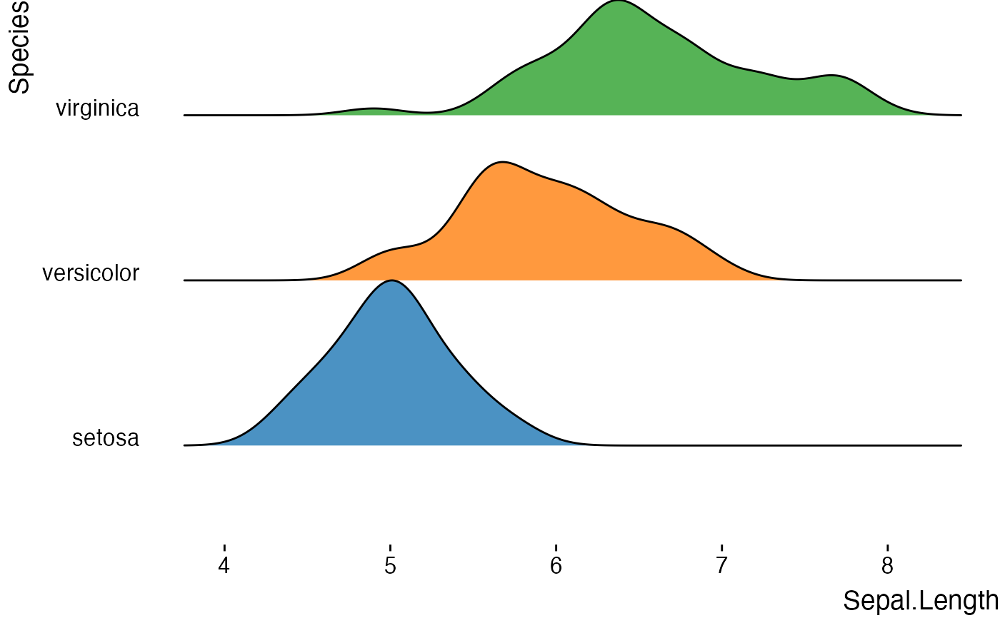

'Create advanced ridgeline plots. Visualize distributions across groups with multiple style options, annotations, statistical overlays, and publication-ready formatting. Supports both basic and complex ridge plots with inside plots, double ridgelines, and color gradients.'
Usage
jjridges(
data,
x_var,
y_var,
fill_var = NULL,
facet_var = NULL,
plot_type = "density_ridges",
scale = 1,
bandwidth = "nrd0",
bandwidth_value = 1,
binwidth = 1,
add_boxplot = FALSE,
add_points = FALSE,
point_alpha = 0.3,
add_quantiles = FALSE,
quantiles = "0.25, 0.5, 0.75",
add_mean = FALSE,
add_median = FALSE,
show_stats = FALSE,
test_type = "parametric",
p_adjust_method = "none",
effsize_type = "d",
alpha = 0.8,
color_palette = "clinical_colorblind",
custom_colors = "#3498db,#e74c3c,#2ecc71,#f39c12",
gradient_low = "#0000FF",
gradient_high = "#FF0000",
fill_ridges = TRUE,
reverse_order = FALSE,
show_fill_legend = TRUE,
show_facet_legend = TRUE,
theme_style = "theme_ridges",
grid_lines = FALSE,
expand_panels = TRUE,
legend_position = "none",
plot_title = "",
plot_subtitle = "",
plot_caption = "",
x_label = "",
y_label = "",
add_sample_size = FALSE,
add_density_values = FALSE,
custom_annotations = "",
width = 800,
height = 600,
dpi = 300,
clinicalPreset = "custom",
showAboutPanel = FALSE,
showAssumptions = FALSE
)Arguments
- data
The data as a data frame.
- x_var
The continuous variable to display as distributions (e.g., biomarker values, age, tumor size). Each group will show the distribution pattern of this variable.
- y_var
The grouping variable for comparison (e.g., disease stage, treatment group, pathology grade). Each group creates a separate ridge for visual comparison.
- fill_var
Optional variable for color/fill mapping within ridges. Creates color-coded segments within each ridge.
- facet_var
Optional variable for creating separate panels. Useful for comparing ridge plots across another dimension.
- plot_type
Type of ridge plot. 'density_ridges' for smooth curves, 'density_ridges_gradient' adds color gradients, 'histogram_ridges' for discrete bins, 'violin_ridges' for violin-style plots.
- scale
Controls ridge height and overlap. Values > 1 create overlapping ridges, < 1 creates more separation between ridges.
- bandwidth
Bandwidth selection for density estimation. Controls smoothness of curves.
- bandwidth_value
Custom bandwidth value when bandwidth method is 'custom'.
- binwidth
Width of bins for histogram-style ridges.
- add_boxplot
Add boxplot elements inside each ridge for enhanced visualization of quartiles and outliers.
- add_points
Show individual data points below ridges as jittered points.
- point_alpha
Transparency of data points when shown.
- add_quantiles
Add vertical lines at specified quantiles within each ridge.
- quantiles
Comma-separated quantile values to display as vertical lines.
- add_mean
Add vertical line at the mean of each distribution.
- add_median
Add vertical line at the median of each distribution.
- show_stats
Display statistical annotations including p-values and effect sizes. WARNING: Assumes independent observations. Not valid for repeated measures data.
- test_type
Type of statistical test for group comparisons when show_stats is TRUE.
- p_adjust_method
Method for adjusting p-values in multiple comparisons.
- effsize_type
Type of effect size to calculate and display. For skewed data (like lymph node counts), consider using nonparametric effect sizes: Cliff's Delta shows probability that one group has higher values, Hodges-Lehmann shift shows typical difference in units.
- alpha
Transparency level for ridge fills.
- color_palette
Color palette for ridges. 'Clinical' is optimized for accessibility and medical publications. Viridis family are also colorblind-friendly.
- custom_colors
Comma-separated list of custom colors when palette is 'custom'.
- gradient_low
Low value color for gradient plots.
- gradient_high
High value color for gradient plots.
- fill_ridges
Whether to fill ridges with color or show only outlines.
- reverse_order
Reverse the vertical order of groups.
- show_fill_legend
Show legend for fill variable when a fill variable is specified.
- show_facet_legend
Show facet labels when faceting is used.
- theme_style
Overall plot theme style.
- grid_lines
Whether to show grid lines in the plot.
- expand_panels
Remove space around plot area for cleaner look.
- legend_position
Position of color legend.
- plot_title
Main plot title.
- plot_subtitle
Plot subtitle for additional context.
- plot_caption
Caption for data source or notes.
- x_label
Custom label for X axis.
- y_label
Custom label for Y axis.
- add_sample_size
Display sample size (n) for each group.
- add_density_values
Display density values at peaks.
- custom_annotations
Custom text annotations in format 'x,y,text;x2,y2,text2'.
- width
Width of the plot in pixels.
- height
Height of the plot in pixels.
- dpi
Resolution for plot export.
- clinicalPreset
Clinical analysis preset for ridge plots. Biomarker Distribution: nonparametric tests with Cliff's delta. Treatment Response: violin plots with Bonferroni correction. Age by Stage: parametric tests with Cohen's d. Tumor Size: Hodges-Lehmann shift. Lab Values: robust tests with Hedges' g. Survival Time: median with quartiles.
- showAboutPanel
Display comprehensive information about ridge plots, interpretation guidance, and clinical examples.
- showAssumptions
Display statistical assumptions, caveats, and methodological notes for the selected test type.
Value
A results object containing:
results$instructions | a html | ||||
results$clinicalSummary | a html | ||||
results$reportSummary | a html | ||||
results$aboutPanel | a html | ||||
results$assumptionsPanel | a html | ||||
results$plot | an image | ||||
results$statistics | a table | ||||
results$tests | a table | ||||
results$interpretation | a html | ||||
results$notices | a html |
Tables can be converted to data frames with asDF or as.data.frame. For example:
results$statistics$asDF
as.data.frame(results$statistics)
Examples
# \donttest{
# Basic ridgeline plot
jjridges(
data = iris,
x_var = "Sepal.Length",
y_var = "Species"
)
#>
#> ADVANCED RIDGE PLOT
#>
#> <div class='clinical-summary' style='background:#f8f9fa;
#> border-left:4px solid #007bff; padding:15px; margin:10px 0;'><h4
#> style='color:#007bff; margin-top:0;'>Clinical Summary
#>
#> Analysis: Ridge plot comparing the distribution of Sepal.Length across
#> 3 groups defined by Species.
#>
#> Sample: n = 150 total observations across all groups.
#>
#> Interpretation Guide:
#>
#> <ul style='margin-bottom:10px;'>Ridge Shape: Wider ridges = more
#> variability; Narrow ridges = consistent valuesRidge Position:
#> Left/right shift indicates lower/higher average valuesMultiple Peaks:
#> May indicate subgroups or distinct clinical phenotypesOverlap: Similar
#> distributions between groups; Separation = distinct patterns
#>
#> <div style='background:#fff8e1; border:1px solid #ffc107;
#> padding:15px; margin:10px 0; font-family:monospace;'><h4
#> style='color:#f57c00; margin-top:0;'>📋 Copy-Ready Report Summary
#>
#> <p style='font-size:11px; color:#666; margin-bottom:10px;'>Select and
#> copy the text below for inclusion in reports or presentations.
#>
#> <div style='background:white; padding:12px; border:1px solid #ddd;'>
#>
#> RIDGE PLOT ANALYSIS
#>
#> Variable: Sepal.Length by Species
#>
#> Total N = 150 across 3 groups
#>
#> DESCRIPTIVE STATISTICS BY GROUP:
#>
#> setosa (n=50): Mean=5.01 (SD=0.35), Median=5.00 (IQR: 4.80-5.20)
#>
#> versicolor (n=50): Mean=5.94 (SD=0.52), Median=5.90 (IQR: 5.60-6.30)
#>
#> virginica (n=50): Mean=6.59 (SD=0.64), Median=6.50 (IQR: 6.23-6.90)
#>
#> <p style='font-size:10px; color:#999; margin-top:10px;'>Generated by
#> ClinicoPath Advanced Ridge Plot Analysis
#>
#> Statistical Summary
#> ───────────────────────────────────────────────────────────────────────────────────────────────────────────────
#> Group N Mean SD Median Q1 Q3 Min Max
#> ───────────────────────────────────────────────────────────────────────────────────────────────────────────────
#> setosa 50 5.0060000 0.3524897 5.0000000 4.8000000 5.2000000 4.3000000 5.8000000
#> versicolor 50 5.9360000 0.5161711 5.9000000 5.6000000 6.3000000 4.9000000 7.0000000
#> virginica 50 6.5880000 0.6358796 6.5000000 6.2250000 6.9000000 4.9000000 7.9000000
#> ───────────────────────────────────────────────────────────────────────────────────────────────────────────────
#>
#>
#> <div class='clinical-summary' style='background:#f8f9fa;
#> border-left:4px solid #007bff; padding:15px; margin:10px 0;'><h4
#> style='color:#007bff; margin-top:0;'>Clinical Summary
#>
#> Analysis: Ridge plot comparing the distribution of Sepal.Length across
#> 3 groups defined by Species.
#>
#> Sample: n = 150 total observations across all groups.
#>
#> Interpretation Guide:
#>
#> <ul style='margin-bottom:10px;'>Ridge Shape: Wider ridges = more
#> variability; Narrow ridges = consistent valuesRidge Position:
#> Left/right shift indicates lower/higher average valuesMultiple Peaks:
#> May indicate subgroups or distinct clinical phenotypesOverlap: Similar
#> distributions between groups; Separation = distinct patterns
#>
#> Technical Interpretation
#>
#> The ridge plot displays the distribution of Sepal.Length across 3
#> groups defined by Species.
#>
#> Each ridge: Shows the probability density or frequency distribution
#> for a groupOverlapping areas: Indicate similar value ranges between
#> groupsRidge height and spread: Indicate the concentration and
#> variability of valuesPeaks: Show the most common values (modes) within
#> each group
#>
#> <div style='margin: 10px 0;'><div style='background:#e3f2fd;
#> border-left:4px solid #1976d2; color:#0d47a1; padding:12px; margin:8px
#> 0; border-radius:4px;'><strong style='display:block;
#> margin-bottom:4px;'>Analysis Complete<span style='opacity:0.9;'>Ridge
#> plot analysis completed successfully • 150 observations across 3
#> groups • Plot type: density_ridges

# Advanced with statistics
jjridges(
data = mtcars,
x_var = "mpg",
y_var = "cyl",
plot_type = "density_ridges_gradient",
show_stats = TRUE,
add_boxplot = TRUE
)
#> Warning: cannot compute exact p-value with ties
#> Warning: cannot compute exact confidence intervals with ties
#> Warning: cannot compute exact p-value with ties
#> Warning: cannot compute exact confidence intervals with ties
#> Error in private$.generateReportSummary(plot_data, private$.option("show_stats")): attempt to apply non-function
# }